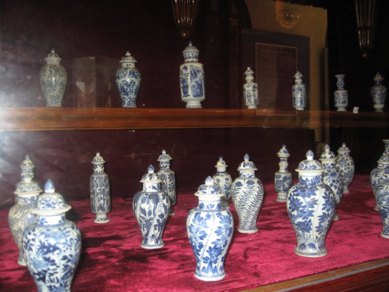

.jpg)
Bạch Dinh ở Vũng Tàu – Tham quan biệt thự mang đậm kiến trúc Pháp
Thành phố biển Vũng Tàu xinh đẹp không chỉ nổi tiếng với bãi biển đẹp với làn nước trong xanh, bãi cát trắng mịn hay chốn “tiên cảnh” Hồ Mây là khu vui chơi lí tưởng mà nơi đây còn lưu giữ nhiều giá trị lịch sử, những công trình có kiến trúc cổ xưa. Một trong những công trình kiến trúc đó phải kể đến Bạch Dinh – biệt thự thu hút khách đến tham quan với lối kiến trúc thời Pháp thuộc vẫn còn giữ gìn tôn tạo vẻ đẹp của nó cho đến ngày nay.
Địa chỉ: số 4 đường Trần Phú, P.1, TP. Vũng Tàu.
-
Khu di tích Bạch Dinh ở Vũng Tàu
Bạch Dinh được gọi theo tên tiếng Pháp là Villa Blanche nghĩa là biệt thự trắng, nằm bên sườn núi lớn của thành phố Vũng Tàu tại địa chỉ số 4 đường Trần Phú, P.1, TP. Vũng Tàu. Mặt trước hướng ra biển, lưng tựa vào núi tạo cho Bạch Dinh một thế vững chắc. Bạch Dinh là tòa nhà 3 tầng, cao 19m, dài 25m, toàn bộ ngôi nhà được quét vôi trắng, cửa mái vòm, mái lợp ngói. Khi đến tham quan biệt thự, du khách có thể thấy được kiến trúc Pháp từ hình dáng đến cách bày trí với những mảng viền trang trí rất nghệ thuật.

Là di tích lịch sử Bạch Dinh Vũng Tàu (Ảnh: Sưu tầm)
Bạch Dinh được xây dựng từ năm 1898 đến năm 1902, từng dùng là nơi nghỉ mát cho Toàn quyền Đông Dương, Hoàng đế Bảo Đại và các đời Tổng thống Việt Nam. Nơi đây cũng là nơi chính quyền thuộc địa Pháp làm nơi giam lỏng vua Thành Thái từ ngày 12 tháng 9 năm 1907 đến năm 1916.
Hình ảnh tòa Bạch Dinh Vũng Tàu (Ảnh: Sưu tầm)
-
Phía ngoài Bạch Dinh
Có 2 lối lên Bạch Dinh. Nếu bạn đi xe hơi thì có 1 đường uốn quanh chạy dưới rừng cây gá tỵ dẫn lên tới tiền sảnh. Còn 1 đường đi bộ qua 146 bậc tam cấp cổ xưa, kín đáo nằm giữa hai hàng sứ cao niên.
Đường lên Bạch Dinh dưới tán cây giá tỵ (Ảnh: Sưu tầm)
Đường đi bộ qua 146 bậc tam cấp (Ảnh: Sưu tầm)
-
Bên trong Bạch Đình có gì?
Bạch Đình mang đậm hơi thở của Pháp, đến đây bạn có thể thấy được đặc trưng của kiến trúc Pháp. Tầng hầm của biệt thự dùng để nấu ăn, tầng trệt dùng làm nơi để tiếp khách. Tầng trệt còn bài trí những hiện vật cổ xưa dùng để trang trí nội thất như: Song bình Bách điểu chầu phụng, bộ tràng kỷ Hoàng Gia ghi niên đại Khải định năm 1921, cặp ngà voi Châu Phi dài 170cm, bộ tam đa ngũ thái Phúc – Lộc – Thọ.
Tham quan Bạch Dinh Vũng Tàu (Ảnh: Sưu tầm)
Vì mang đậm kiến trúc Pháp lên tầng lầu có rất nhiều cửa sổ, mỗi cửa sổ có một view khác nhau, nhìn ra cảnh vật xung quanh thật thích thú, đứng từ đây gió thổi qua cửa sổ mát lạnh. Tầng lầu thoáng đạt thích hợp là nơi dành để nghỉ ngơi.
Hành lang của Bạch Dinh (Ảnh: Sưu tầm)
Lối kiến trúc vẫn còn nguyên vẹn (Ảnh: Sưa tầm)
-
Các chi tiết khác
Nguyên liệu để trang trí Bạch Dinh chủ yếu là sứ men. Khi đi xung quanh du khách sẽ thấy trên từng mảng tường là những gương mặt phụ nữ châu Âu xinh đẹp, đôi chim công xòe cánh phô những chấm bạc lấp lánh, đôi cá chép uốn lượn như muốn hóa rồng…Từng chi tiết sắc sảo tôn lên vẻ đẹp của Bạch Dinh. Đặc biệt du khách không khỏi ngạc nhiên với 8 bức tượng bán thân bằng sứ men, mang phong cách của nghệ thuật Hy Lạp cổ đại bao quanh 3 mặt tường của dinh thự. Lúc bình minh hay chiều tà, ánh nắng chiếu vào khiến bức tượng càng thêm lấp lánh, tráng lệ diệu kì.
Các chi tiết bên ngoài Bạch Dinh ở Vũng Tàu (Ảnh: Sưu tầm)
Bạch Dinh không chỉ thu hút du khách bởi kiến trúc mà còn thu hút bởi khung cảnh thơ mộng nơi đây. Khi đặt chân đến đây, du khách không khỏi ngỡ ngàng như đang lạc vào tòa lâu đài cổ kính giữa rừng đầy kì bí. Vào mùa mưa, rừng bao quanh Bạch Dinh xanh ngút ngàn, từng cành lá giá tỵ xòe ô che kín lối đi. Vào mùa lá rụng đâu đâu ở đây cũng bắt gặp hoa sứ, nguyên cả con đường lên Bạch Dinh cũng ngập tràn sắc đỏ, trắng, hồng rực cả đường đi và cả khu vườn.
Con đường lên Bạch Dinh Vũng Tàu (Ảnh: Sưu tầm)
Hoa sứ với sắc đỏ ngập tràn (Ảnh: Sưu tầm)
Với vị trí đắc địa, từ Bạch Dinh có thể nhìn ra Bãi Trước, có thể nhìn bao quát ra cảnh biển, du khách có thể cảm nhận hơi thở của thành phố Vũng Tàu.
Cũng tham quan tòa Bạch Dinh Vũng Tàu – Địa điểm du lịch Vũng Tàu đẹp (Ảnh: Sưu tầm)
Hiện nay Bạch Dinh được dùng làm bảo tàng trưng bày bộ sưu tập gốm sứ quý hiếm thời Khang Hy vớt được từ các tàu cổ đâm tại khu vực Hòn Cau – Côn Đảo, súng thần công cùng nhiều hiện vật có giá trị khác.
Súng thần công (Ảnh: Sưu tầm)
Bộ gốm sứ trong Bạch Dinh ở Vũng Tàu (Ảnh: Sưu tầm)